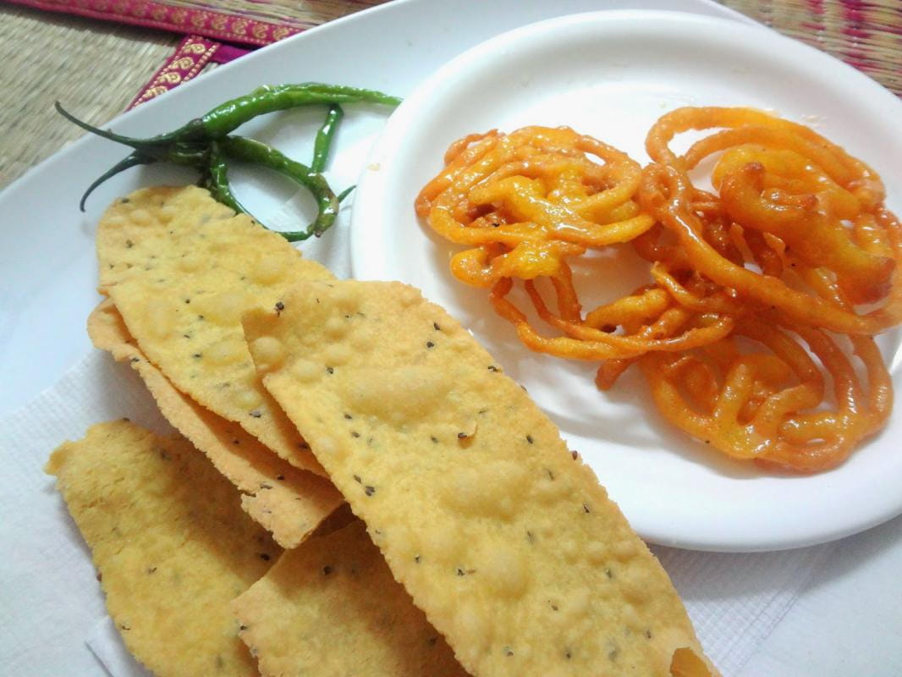

Fafda Jalebi

Description
Fafda Jalebi is a traditional gujarati snack which is often consumed on festive of Dusshera. Fafda is made with besan flour dipped in oil served with papaya and jalebi is a sweet made of a coil of deep-fried batter. They both are famous also because of jethala in TMKOC indian show who consumes them on Every Sunday
Ingredients
- Gram Flour / Chickpea Flour : 1 1/2 cup
- Ajwain / Carom Seeds : 1 tbsp or to taste
- Crushed Black Pepper : 1 tbsp
- Baking Soda : a pinch
- Turmeric Powder : 1/4 tsp
- Oil : 3 tbsp + as required for deep fry
- Salt to taste
- Water
Steps
- In a bowl, add 2 tbsp oil, salt, turmeric powder, crushed black pepper, ajwain seeds, and baking soda together in a bowl and mix well.
- Add the gram flour/ chickpea flour, add water little by little and make a soft dough just like chapatti dough. Knead the dough at least for 5-6 minutes and add 1 tbsp oil; again knead the dough nicely and leave it aside for 15 to 20 minutes covering with kitchen towel or with a clingfilm.
- After 15 to 20 minutes; take a some portion of the dough and give them oval shape and place it on a greased surface.(Note : Take flat surface like chopping board but not very smooth, it helps when you remove the fafda from the board.)
- Take a oval dough ball; with base of your palm press the dough and increase the length of ball with hands and keep it on the board under your palm. Press it with the palms and it in front direction. Roll out the thin layer and cut out strips from it.
- Fry these strips over medium heat until crisp. Let them cool.
- Now Your Delicious fafda is Ready to eat!. Serve with Papaya and jalebi